Panduan Admin Penagihan
Anda memegang operasional harian: memastikan setiap pelanggan tertagih, setiap pembayaran tercatat, setiap setoran petugas masuk, dan laporan siap saat diminta.
Tugas Anda
Wewenang Anda
Seluruh menu Penagihan, Laporan, dan Master Data — termasuk mengisolir pelanggan, mengubah dan menghapus transaksi, mencatat setoran, serta import & export Excel.
Khusus CEO
Tiga menu tidak tersedia untuk Anda: Pengguna (akun), dan Log Aktivitas. Bila membutuhkannya, hubungi CEO.
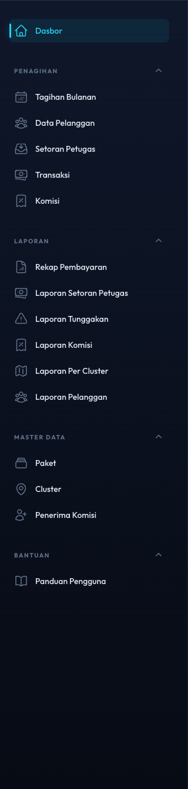
Alur kerja harian
Cek Dashboard
Lihat tingkat penagihan dan kekurangan setor.
Catat transfer masuk
Cocokkan mutasi rekening, catat sebagai transaksi Transfer.
Terima setoran petugas
Hitung uang, lalu catat di menu Setoran Petugas.
Isolir & laporan
Isolir penunggak, tarik rekap dan laporan tunggakan.
Peta menu
| Grup | Menu | Untuk apa |
|---|---|---|
| Penagihan | Tagihan Bulanan | Daftar siapa yang harus ditagih bulan ini. |
| Data Pelanggan | Induk data pelanggan. | |
| Setoran Petugas | Mencatat uang tunai yang disetor petugas. | |
| Transaksi | Seluruh catatan pembayaran. | |
| Komisi | Komisi petugas per periode. | |
| Laporan | 6 laporan | Rekap, setoran, tunggakan, komisi, per daerah, pertumbuhan pelanggan. |
| Semua bisa diunduh sebagai Excel, kecuali Rekap Pembayaran (hanya dilihat). | ||
| Master Data | Paket | Daftar paket internet & harganya. |
| Daerah | Wilayah penagihan & petugas penanggung jawab. | |
| Bantuan | Panduan Pengguna | Membuka panduan ini di tab baru. |
Dashboard
Ringkasan kondisi bulan berjalan. Ganti Periode di atas untuk melihat bulan lain.
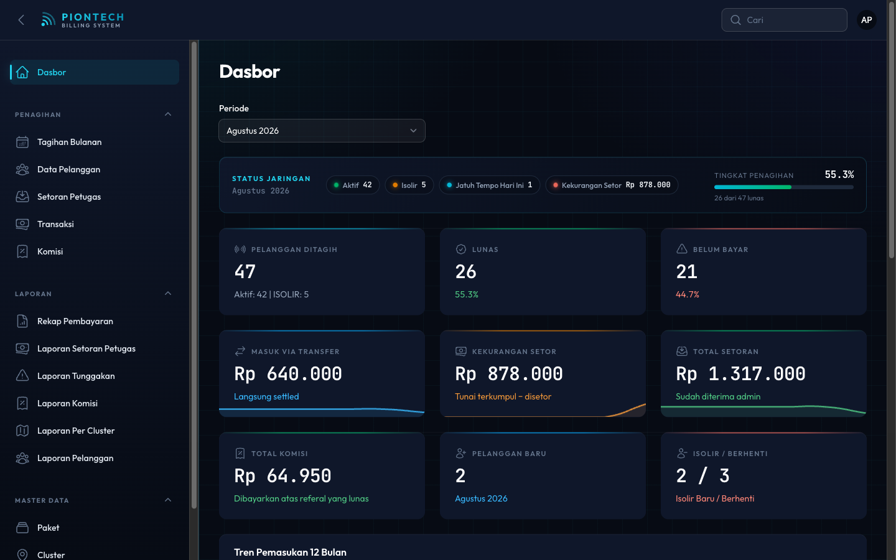
| Kartu | Artinya |
|---|---|
| Status Jaringan | Ringkasan cepat: jumlah Aktif, Isolir, jatuh tempo hari ini, dan kekurangan setor, plus tingkat penagihan bulan ini. |
| Pelanggan Ditagih | Pelanggan yang ditagih bulan ini (Aktif + Isolir). Pelanggan Berhenti tidak dihitung. |
| Lunas / Belum Bayar | Jumlah dan persentase pelanggan yang sudah dan belum membayar. |
| Masuk via Transfer | Uang yang langsung masuk rekening kantor. |
| Kekurangan Setor | Uang tunai yang masih dipegang petugas. Angka ini yang perlu Anda kejar setiap sore. |
| Total Setoran | Uang tunai yang sudah Anda terima dari petugas. |
Tagihan Bulanan
Daftar kerja bulanan: siapa yang harus ditagih, siapa yang sudah bayar. Berbeda dari menu Transaksi, di sini pelanggan yang belum membayar pun ikut tampil.
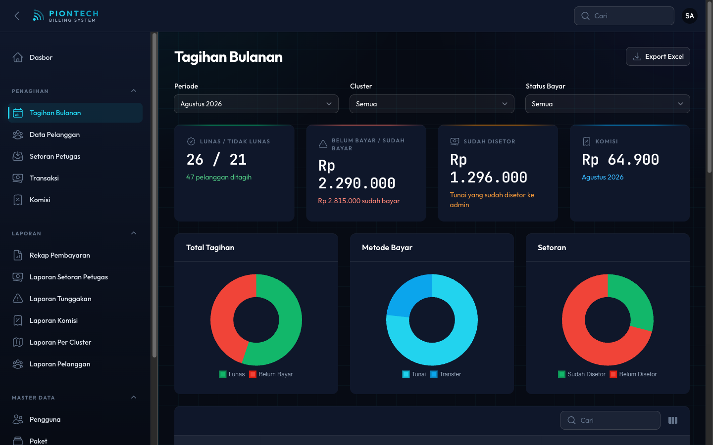
- Pilih Periode yang ingin dikerjakan.
- Pilih Daerah untuk fokus ke wilayah tertentu.
- Pilih Status Bayar → Belum Bayar untuk melihat sisa tagihan.
- Gunakan tombol pada tiap baris: Foto Rumah, Cek Lokasi, atau Catat Pembayaran.
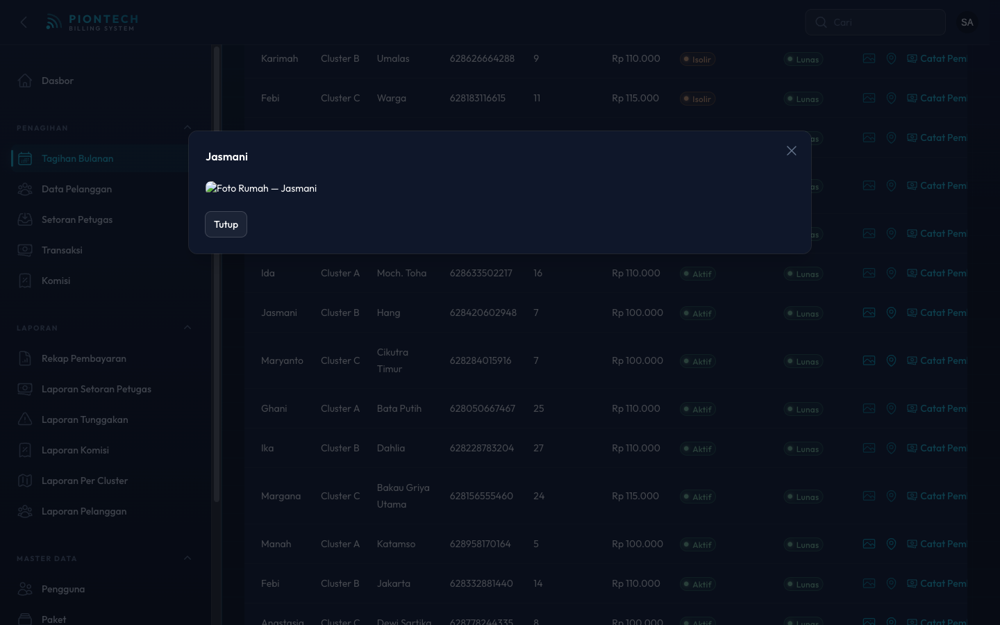
Data Pelanggan
Induk seluruh data. Setiap pelanggan wajib punya daerah dan nominal tagihan.
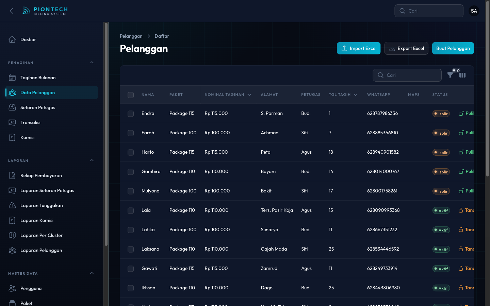
Menambah pelanggan
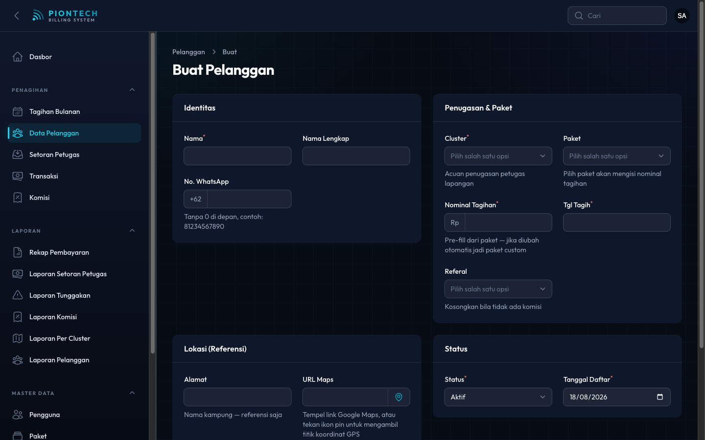
- Identitas — Nama (wajib), Nama Lengkap, No. WhatsApp tanpa angka 0 di depan.
- Penugasan & Paket — pilih Daerah (wajib) dan Paket; Nominal Tagihan terisi otomatis dan tetap bisa diubah.
- Tgl Tagih — tanggal 1–31, menentukan kapan pelanggan muncul di daftar jatuh tempo petugas.
- Lokasi — alamat, tautan Maps, dan foto rumah.
- Status — biarkan Aktif untuk pelanggan baru.
- Tekan Buat.
Isolir & pulihkan
Untuk pelanggan yang menunggak, gunakan tombol Tandai ISOLIR pada baris pelanggan. Untuk mengaktifkannya kembali, gunakan Pulihkan Aktif.
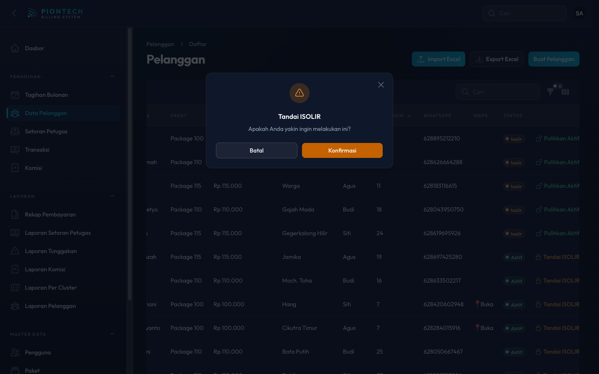
Tanggal isolir dan tanggal berhenti dicatat otomatis oleh sistem, jadi Anda tidak perlu mengisinya.
Import & export Excel
Import pelanggan
Untuk memasukkan banyak pelanggan sekaligus, gunakan tombol Import di halaman Data Pelanggan.
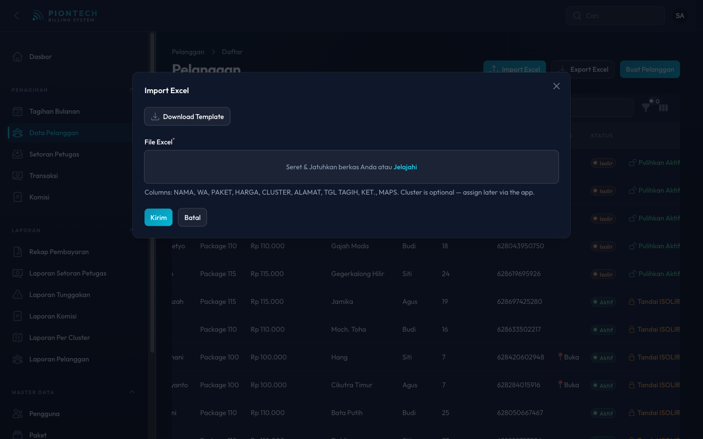
- Unduh template dari jendela import.
- Isi data pelanggan mengikuti kolom template.
- Unggah berkasnya, lalu jalankan import.
- Periksa hasilnya di daftar pelanggan.
Export
Tombol Export Excel tersedia di Tagihan Bulanan, Data Pelanggan, Transaksi, dan Setoran Petugas. Yang diekspor adalah data yang sedang tampil — filter, pencarian, dan urutan ikut terbawa. Saring dulu, baru ekspor.
Transaksi
Seluruh pembayaran yang tercatat. Di sinilah Anda mencatat pembayaran transfer.
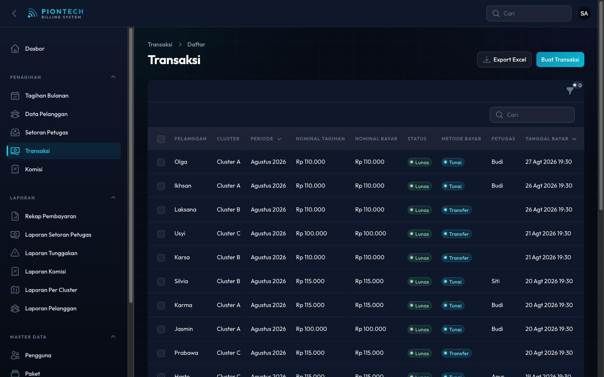
Filter tersedia di bagian atas (klik untuk membuka):
- Periode — default bulan berjalan. Centang Gunakan Rentang Tanggal untuk menyaring berdasarkan tanggal bayar.
- Status dan Metode Bayar — misalnya hanya Transfer.
- Petugas dan Daerah — untuk menelusuri per wilayah.
Mencatat pembayaran
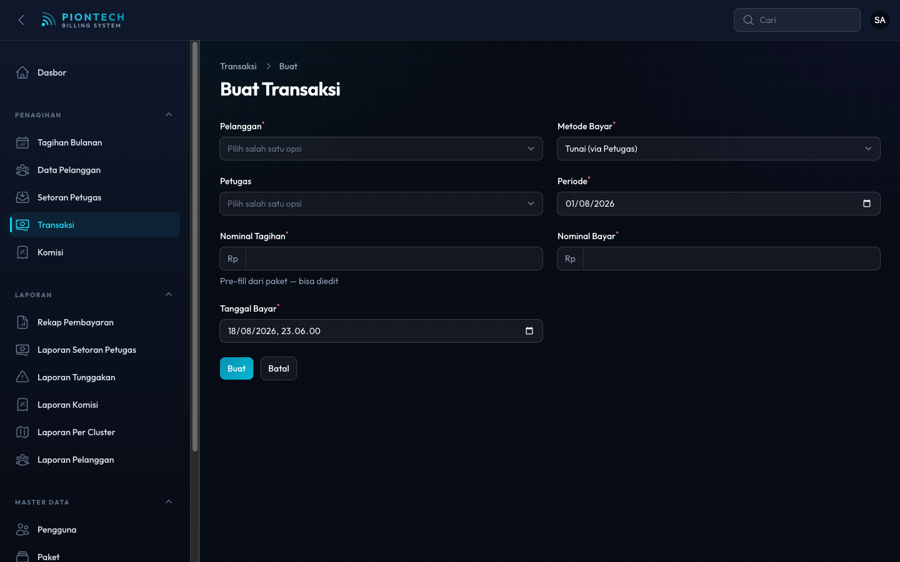
- Pilih Pelanggan — nominal tagihan terisi otomatis.
- Pilih Metode Bayar: Tunai (via Petugas) atau Transfer Langsung.
- Untuk tunai, pilih Petugas yang menarik uangnya. Untuk transfer, kolom ini hilang dengan sendirinya.
- Pastikan Periode benar — ini menentukan tagihan bulan mana yang dilunasi.
- Isi Nominal Bayar dan Waktu Bayar, lalu tekan Buat.
Setoran Petugas
Mencatat uang tunai yang diserahkan petugas ke kantor.
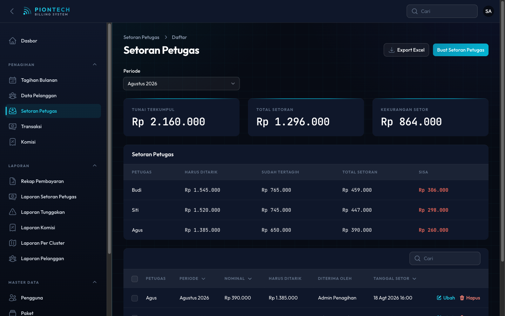
| Kolom | Artinya |
|---|---|
| Harus Ditarik | Total tagihan pelanggan di daerah petugas itu, dikurangi yang dibayar lewat transfer. |
| Sudah Tertagih | Uang tunai yang benar-benar sudah ditarik petugas. |
| Total Setoran | Yang sudah diserahkan ke kantor. |
| Sisa | Masih dipegang petugas. Merah berarti belum lunas disetor. |
Mencatat setoran
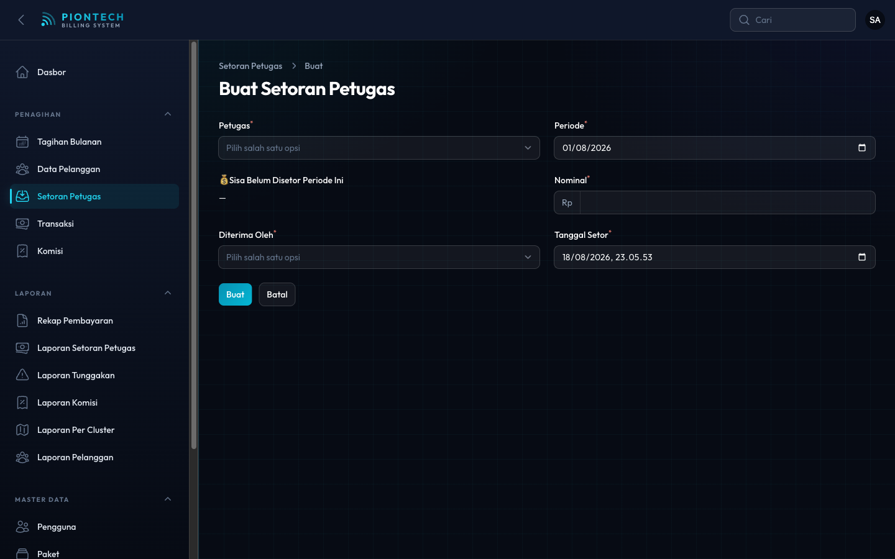
- Pilih Petugas yang menyetor — panel di atas form menampilkan sisa yang seharusnya.
- Pastikan Periode sesuai bulan penagihannya.
- Hitung uangnya, isi Nominal sesuai jumlah fisik yang diterima.
- Diterima Oleh — nama Anda sendiri.
- Tekan Buat.
Komisi
Menghitung upah petugas lapangan: jumlah pelanggan yang sudah lunas di daerah petugas, dikali Komisi per Pelanggan pada akun petugas itu. Tarifnya diatur CEO saat membuat atau menyunting akun petugas.
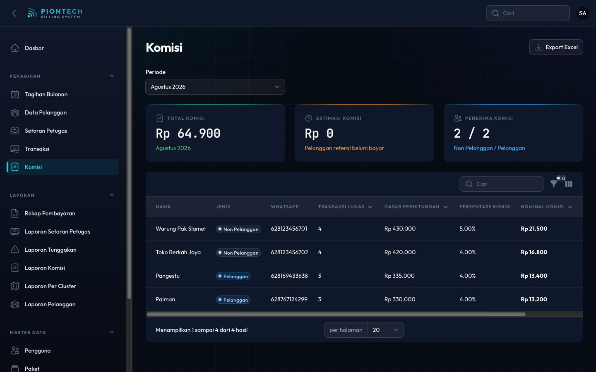
- Total Komisi — yang sudah menjadi hak petugas karena pelanggannya sudah membayar.
- Estimasi Komisi — perkiraan tambahan bila pelanggan yang belum bayar melunasi bulan ini.
- Semua petugas tetap ditampilkan, termasuk yang bernilai nol.
Master Paket
Daftar paket internet beserta harganya.
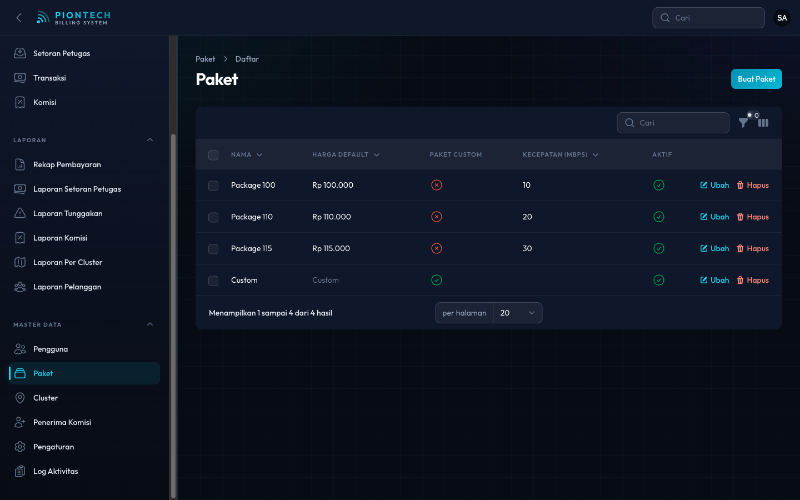
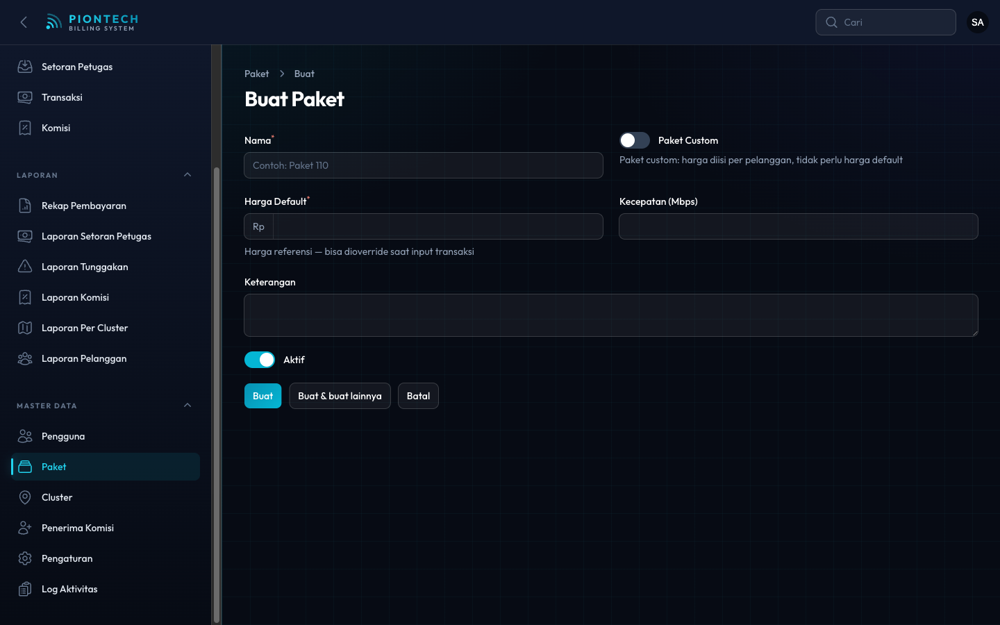
Mengubah harga paket tidak mengubah nominal pelanggan lama. Nominal tersimpan per pelanggan, jadi kenaikan harga harus diterapkan ke pelanggan yang bersangkutan.
Master Daerah
Wilayah penagihan beserta petugas penanggung jawabnya.
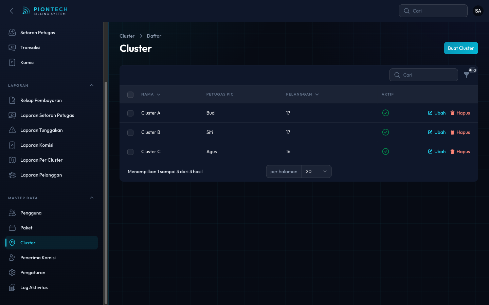
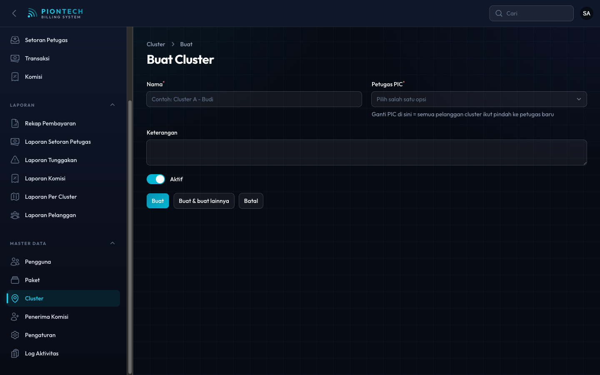
Laporan
Enam laporan, semuanya memakai rentang tanggal yang default-nya bulan berjalan. Atur rentangnya, lihat pratinjau di layar, lalu tekan Unduh Excel.
| Laporan | Isinya | Kapan dipakai |
|---|---|---|
| Rekap Pembayaran | Delapan angka kunci: tagihan, terbayar, tunai, transfer, setoran, dan sisanya. | Ringkasan cepat ke pimpinan. Hanya dilihat, tanpa unduhan. |
| Laporan Setoran Petugas | Satu baris per petugas: harus ditarik, tertagih, disetor, sisa. | Menagih kekurangan setor. |
| Laporan Tunggakan | Pelanggan yang belum membayar. | Bahan penagihan & keputusan isolir. |
| Laporan Komisi | Komisi per petugas pada rentang tanggal. | Dasar pembayaran komisi. |
| Laporan Per Daerah | Tagihan, terbayar, tingkat penagihan, jumlah penunggak per daerah. | Menilai kinerja wilayah. |
| Laporan Pelanggan | Pelanggan baru, isolir, berhenti, dan total terdaftar per bulan. | Melihat pertumbuhan. |
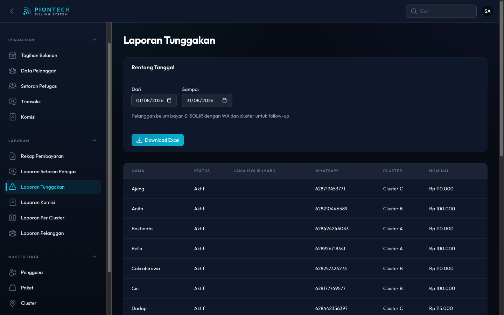
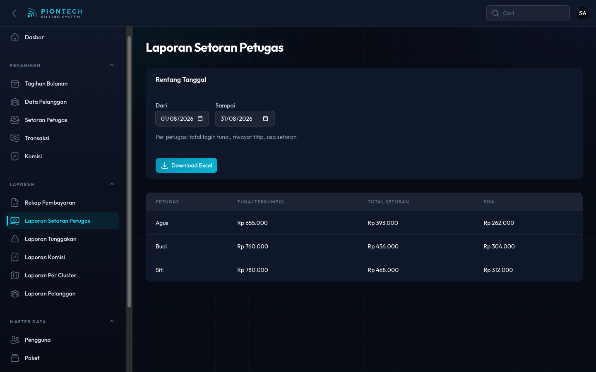
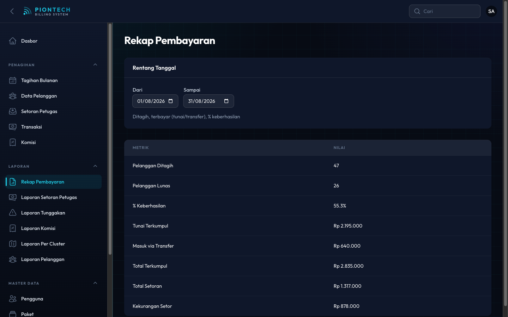
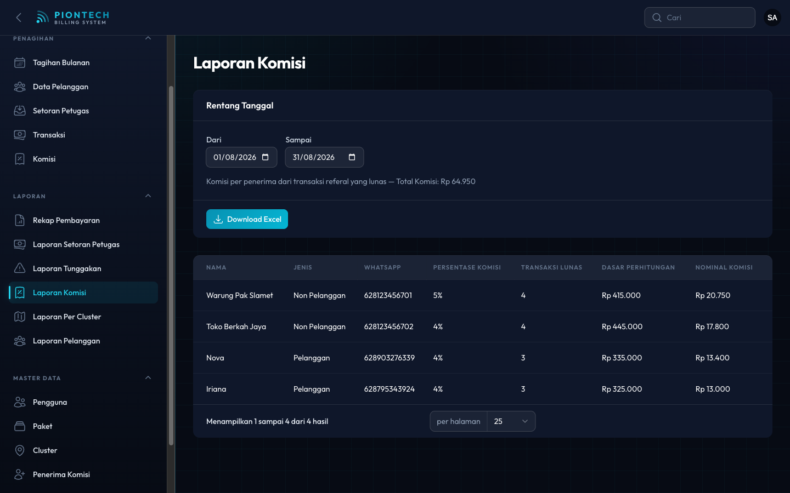
Kalau ada masalah
| Keadaan | Yang perlu dilakukan |
|---|---|
| Ditolak saat mencatat transaksi | Pembayaran untuk pelanggan & periode itu sudah ada. Cek menu Transaksi sebelum mencatat ulang. |
| Angka setoran petugas terasa janggal | Periksa metode bayar transaksinya. Transaksi tunai yang salah dicatat sebagai transfer akan mengecilkan kewajiban setor petugas. |
| Pelanggan tidak muncul di Tagihan Bulanan | Kemungkinan statusnya sudah Berhenti. Pelanggan Berhenti memang tidak ditagih. |
| Hasil import tanpa daerah | Nama daerah di Excel tidak cocok dengan master. Perbaiki lewat form pelanggan. |
| Export isinya tidak sesuai harapan | Export mengikuti filter yang sedang aktif. Bersihkan atau sesuaikan filter, lalu ekspor ulang. |
| Butuh menu Pengguna / Log Aktivitas | Keduanya khusus CEO. Hubungi CEO. |